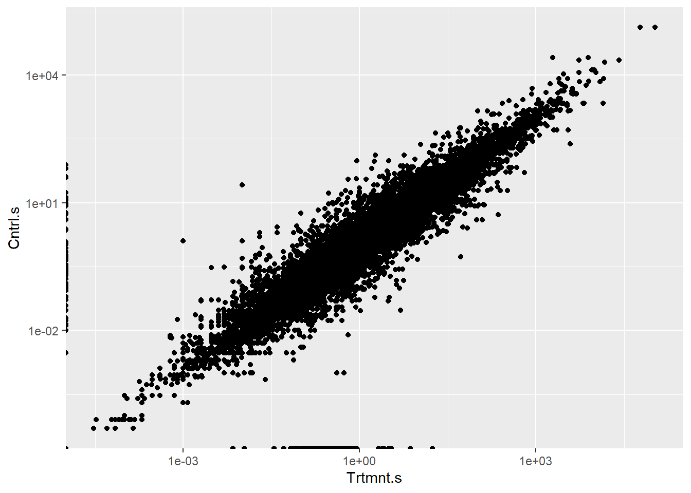
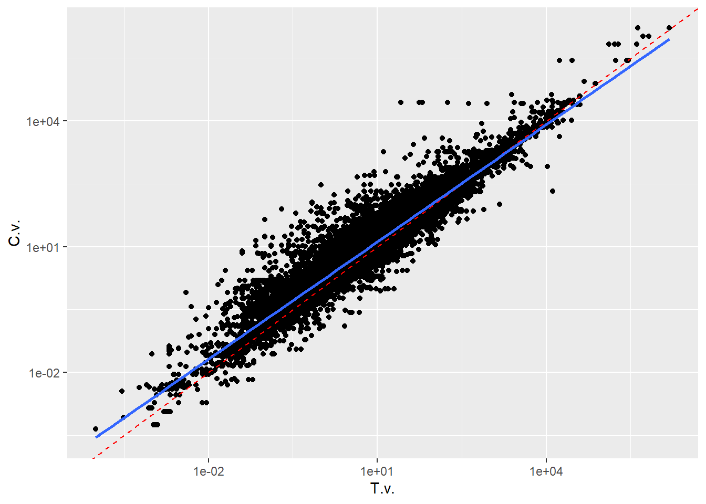
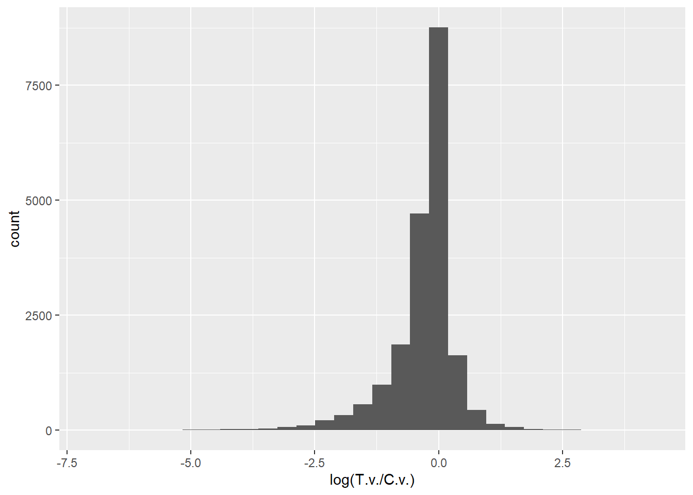

A comprehensive analysis synthesizing effects across diverse organisms and responses:
Effects across taxonomic groups:
Major groups (animals, plants, microorganisms)
Subgroups (e.g., vertebrates vs invertebrates)
Different response variables (growth, reproduction, behavior, biomarkers)
Additional contols (subsets of data or moderators/components added to the model)
Phylogenetic corrections (built in as random effect, some of the species not available in Open Tree of LIfe)
Random effects for study and pesticide identity
Different correlation structures
Field vs laboratory conditions
Realistic exposure scenarios
Taxonomic groups (i.e., animals, plants and microorganisms) were treated as fixed effects alongwith the moderator variables (i.e., pesticide class, study types, climatic zone, exposure medium, pesticide type, and number of added pesticide application rates)
Model comparison / selection is done by comparing base models vs. models with added moderators, testing interaction effects, using LRT between models.
The authors also tries to validate the common pattern from the huge dataset across different subsets and conditions.
Most important for pesticides, > The responses of different taxonomic groups and their growth, reproduction, behaviour and biomarkers to application rates under recommended fieldapplication rates are presented in Supplementary Tables 10–14, and these responses toapplicationrates under maximum environmentally relevant concentrations are presented in SupplementaryTables 17–22.
In other cases, data used for creating dose-response curves where high effects are expected can really skew the full picture.
While this meta-analysis provides valuable broad patterns, the effect sizes should be interpreted cautiously, especially for risk assessment purposes. The most meaningful insights likely come from the subset of studies using environmentally relevant concentrations under realistic exposure conditions.
As defined in the paper as modified lnRR, we don’t know what is the minimum biologically relevant effect sizes and you cannot expect a pesticide has no effects across all non-target organisms. Insecticides should kill insects when applied to a certain amount. Are there any other confounding factors for realistic exposure field studies?
Critical Weakness
I would like to look at distribution of effects not just means.
Sample size is too big, any mean value could be significant just due to the sheer size. any moderator categories could also be significant due to large N in the standard error calculation.
No application rate associasion is very suspicious.
original lnRR v.s. modified version
Heterogeneity.
Additionally, some minor issues: - many terminology unclear, especially in additional information e.g., pesticide species as random effect? - missing func.R for the fuctions to calculate lnRR used in the analysis. - Why? arcsine-square root transformation of percentage data
library(tidyverse)
── Attaching core tidyverse packages ──────────────────────── tidyverse 2.0.0 ──
✔ dplyr 1.1.4 ✔ readr 2.1.5
✔ forcats 1.0.0 ✔ stringr 1.5.1
✔ ggplot2 3.5.1 ✔ tibble 3.2.1
✔ lubridate 1.9.3 ✔ tidyr 1.3.1
✔ purrr 1.0.2
── Conflicts ────────────────────────────────────────── tidyverse_conflicts() ──
✖ dplyr::filter() masks stats::filter()
✖ dplyr::lag() masks stats::lag()
ℹ Use the conflicted package (<http://conflicted.r-lib.org/>) to force all conflicts to become errors
Data <-readRDS("C:/Users/gbbfx/OneDrive - Bayer/Projects/LTO/NTA_general/Data.rds")p <-ggplot(Data,aes(x=Trtmnt.s,y=Cntrl.s))+geom_point()+scale_x_log10()+scale_y_log10()p
Warning in scale_x_log10(): log-10 transformation introduced infinite values.
Warning in scale_y_log10(): log-10 transformation introduced infinite values.
Warning: Removed 4522 rows containing missing values or values outside the scale range
(`geom_point()`).

p <-ggplot(Data,aes(x=T.v.,y=C.v.))+geom_point()+scale_x_log10()+scale_y_log10()p+geom_abline(intercept =0, slope =1, color ="red", linetype ="dashed") +geom_smooth(method ="lm")
`geom_smooth()` using formula = 'y ~ x'
Warning: Removed 137 rows containing non-finite outside the scale range
(`stat_smooth()`).
Warning: Removed 137 rows containing missing values or values outside the scale range
(`geom_point()`).

p <-ggplot(Data, aes(x=log(T.v./C.v.)))+geom_histogram()p
`stat_bin()` using `bins = 30`. Pick better value with `binwidth`.
Warning: Removed 137 rows containing non-finite outside the scale range
(`stat_bin()`).

In details, critical weaknesses I saw include:
Statistical and Methodological Issues:
Use of log response ratios (lnRR) across vastly different types of responses
Significant publication bias detected but not fully addressed, the number given is from an unfair calculation, it doen’t mean the true effect is not 0, but means to have this true effect, you need a lot more small effects studies to balance the bigger negative effect observations / publications.
Missing variance data requiring imputation methods, and the author used the same imputation across all lnRRs? Or I understood wrongly?
Combining different exposure metrics and routes
Potential pseudoreplication in the data, the author addressed the repeated use of control by some variance structure which sees to be designed arbitrarily?
The exploration of effect size heterogeneity could be more thorough, right now I don’t really understand how it is addressed, except for the CV calculation.
Complex interactions between variables are not really explored, it seems they add and remove one-by-one. Except for the categorical summaries, it seems no other confounding variables, maybe included in the original study, included into this meta-analysis.
Data Integration Challenges:
Combining very different types of biological responses
Mixing lab and field studies
Taking absolute values for biomarker data loses directional information
Arbitrary standardization of doses using relative scaling
Variable quality of included studies
Ecological Context Limitations:
Limited consideration of population/community level effects
Complex species interactions not fully explored (only phylogenetic trees)
Temporal aspects poorly addressed (as independent data points)
Real-world relevance of many included studies unclear
Causality and Mechanistic Understanding:
Cannot establish direct causation (“True effect” definition unclear to me, relevant effect size also hard to define across so hetergenious responses from different scenario combinations).
Complex interactions between factors not fully explored
Exposure Assessment:
Different exposure routes and durations combined
May not reflect real-world exposure patterns
Arbitrary standardization of doses
These limitations should be considered when interpreting the conclusions about pesticide effects on non-target organisms.
Specifically on Publication Bias
The authors addess publication bias by: - Regression test on full dataset (20,212 observations from 1,705 articles) - a regression coefficient between the effect size and the sample variance was evaluated - (value of regressiontest=-24.879, P<0.001) - Trim-and-fill method (also proposed by Egger et al.)to assess result robustness ??? - (Supplementary Table 2), used together along regression tests and Rosentha’s fail-safe N - Creates a funnel plot of study effect sizes vs their standard errors - Looks for asymmetry in the funnel plot that suggests missing studies - “Trims” off asymmetric studies to get a new estimate - “Fills” in missing studies by adding mirror images of the trimmed studies - Recalculates the overall effect size including these imputed studies - Residual analysis from mixed-effects models (Egger’s Test) - regression coefficients between residuals and the sample variaces. - Rosenthal fail-safe numbers calculation to the full dataset - Found a fail-safe N score of 11,459,423 (much larger than threshold of 101,070) - This suggests results are highly stable even accounting for potential publication bias - The high fail-safe N means an extremely large number of null studies would be needed to overturn their findings
Trim and fill method
The trim and fill method provides an intuitive way to detect and correct for potential publication bias in meta-analyses. Here’s why:
The Basic Principle:
In an unbiased literature, study results should be symmetrically distributed around the true effect size
Larger studies (more precise) cluster near the true effect
Smaller studies (less precise) spread out more evenly on both sides
This creates a symmetric funnel shape when plotted
Why Symmetry Indicates No Publication Bias:
Symmetry suggests all results had equal chance of being published
Both positive and negative findings are represented
No systematic suppression of certain types of results
More likely to represent the true distribution of effects
Provides more reliable estimate of the true effect size
How Asymmetry Indicates Publication Bias:
Usually shows up as “missing” studies on one side
Typically negative/null results from smaller studies are missing
Creates a skewed funnel plot
Suggests systematic exclusion of certain findings
Often biases results toward positive/significant effects
The Correction Process:
Identifies asymmetry in the funnel plot
“Trims” off asymmetric studies
Re-estimates the center
“Fills” in missing studies with mirror images
Provides adjusted effect size estimate
So symmetry is good because it suggests we’re seeing the complete picture of research results, not just selected positive findings. The trim and fill method helps identify and correct for this potential bias.
library(meta)
Warning: package 'meta' was built under R version 4.4.3
Loading required package: metadat
Warning: package 'metadat' was built under R version 4.4.2
Loading 'meta' package (version 8.0-2).
Type 'help(meta)' for a brief overview.
data(Fleiss93)m1 <-metabin(event.e, n.e, event.c, n.c, data = Fleiss93, sm ="OR")tf1 <-trimfill(m1)summary(tf1)
OR 95%-CI %W(random)
1 0.7197 [0.4890; 1.0593] 6.8
2 0.6808 [0.4574; 1.0132] 6.5
3 0.8029 [0.6065; 1.0629] 10.8
4 0.8007 [0.4863; 1.3186] 4.5
5 0.7981 [0.5526; 1.1529] 7.4
6 1.1327 [0.9347; 1.3728] 16.4
7 0.8950 [0.8294; 0.9657] 26.8
Filled: 5 1.0466 [0.7246; 1.5118] 7.4
Filled: 1 1.1607 [0.7886; 1.7084] 6.8
Filled: 2 1.2271 [0.8244; 1.8263] 6.5
Number of studies: k = 10 (with 3 added studies)
Number of observations: o = 31987 (o.e = 16369, o.c = 15618)
Number of events: e = 4775
OR 95%-CI z p-value
Random effects model 0.9228 [0.8228; 1.0350] -1.37 0.1699
Quantifying heterogeneity (with 95%-CIs):
tau^2 = 0.0113 [0.0000; 0.1145]; tau = 0.1061 [0.0000; 0.3384]
I^2 = 37.4% [0.0%; 70.1%]; H = 1.26 [1.00; 1.83]
Test of heterogeneity:
Q d.f. p-value
14.37 9 0.1099
Details of meta-analysis methods:
- Inverse variance method
- Restricted maximum-likelihood estimator for tau^2
- Q-Profile method for confidence interval of tau^2 and tau
- Calculation of I^2 based on Q
- Trim-and-fill method to adjust for funnel plot asymmetry (L-estimator)
Warning in plot.window(...): "comb.random" is not a graphical parameter
Warning in plot.xy(xy, type, ...): "comb.random" is not a graphical parameter
Warning in axis(side = side, at = at, labels = labels, ...): "comb.random" is
not a graphical parameter
Warning in axis(side = side, at = at, labels = labels, ...): "comb.random" is
not a graphical parameter
Warning in box(...): "comb.random" is not a graphical parameter
Warning in title(...): "comb.random" is not a graphical parameter
## Use log odds ratios on x-axis#funnel(tf1, backtransf =FALSE)
Warning in plot.window(...): "comb.random" is not a graphical parameter
Warning in plot.xy(xy, type, ...): "comb.random" is not a graphical parameter
Warning in axis(side = side, at = at, labels = labels, ...): "comb.random" is
not a graphical parameter
Warning in axis(side = side, at = at, labels = labels, ...): "comb.random" is
not a graphical parameter
Warning in box(...): "comb.random" is not a graphical parameter
Warning in title(...): "comb.random" is not a graphical parameter
trimfill(m1$TE, m1$seTE, sm = m1$sm)
Number of studies: k = 10 (with 3 added studies)
OR 95%-CI z p-value
Random effects model 0.9228 [0.8228; 1.0350] -1.37 0.1699
Quantifying heterogeneity (with 95%-CIs):
tau^2 = 0.0113 [0.0000; 0.1145]; tau = 0.1061 [0.0000; 0.3384]
I^2 = 37.4% [0.0%; 70.1%]; H = 1.26 [1.00; 1.83]
Test of heterogeneity:
Q d.f. p-value
14.37 9 0.1099
Details of meta-analysis methods:
- Inverse variance method
- Restricted maximum-likelihood estimator for tau^2
- Q-Profile method for confidence interval of tau^2 and tau
- Calculation of I^2 based on Q
- Trim-and-fill method to adjust for funnel plot asymmetry (L-estimator)
Note that the Y-axis (Standard Error) is inverted, meaning:
0 at the top (most precise studies)
Increasing values going down (less precise studies)
Egger’s test
Regression coefficient significance of Y=standard error agains X= Effect sizes or residuals.
Slope significant means there is a publication bias.
The Egger’s Test Implementation in the paper:
Takes residuals from meta-regression model:
egger_dt <-data.frame(r =residuals(model.null),s =sign(residuals(model.null))*sqrt(diag(vcov(model.null, type ="resid"))))
Regresses residuals against their standard errors:
egg_test <-lm(r~s, egger_dt)
The Egger’s test results in this paper (first one being: value = -24.879, p < 0.001) indicate significant publication bias in the meta-analysis. Here’s what this means:
Test Interpretation: - The significant negative coefficient suggests small studies tend to report larger effects than expected - This could indicate selective reporting where null or negative results are less likely to be published - May reflect “file drawer” problem where non-significant results remain unpublished
Rosenthal’s fail-safe N concept and calculation:
Rosenthal’s fail-safe N is a statistical method used to assess the robustness of meta-analysis results against publication bias. It calculates the number of unpublished “null” studies (studies showing no effect) that would need to exist to nullify the significant findings of a meta-analysis.
Key aspects of Rosenthal’s fail-safe N: 1. Purpose: It estimates how many “null” or “negative” studies would need to exist to nullify the significant findings of a meta-analysis 2. Core concept: If this number is very large, it suggests the findings are robust against publication bias 3. In this paper: They found a fail-safe N of 11,459,423, compared to a threshold of 101,070
The calculation involves: 1. Converting effect sizes to Z-scores 2. Summing the Z-scores 3. Using Rosenthal’s formula: N = (∑Z/1.645)² - k Where: - ∑Z is sum of Z-scores - 1.645 is critical value for one-tailed p=0.05 - k is number of studies - N is number of null studies needed
The large number (11,459,423) indicates: - Would need over 11 million null studies to overturn findings - Provides very strong evidence against publication bias - Results are extremely robust and reliable - Far exceeds the conservative threshold of 101,070
The large discrepancy between the calculated fail-safe N (11,459,423) and the threshold (101,070) suggests that the findings about pesticide effects on non-target organisms are highly stable and reliable, even accounting for potential unpublished negative results. This helps validate that the observed negative effects of pesticides on non-target organisms are real and not an artifact of publication bias.
However, …
Context Considerations:
Very large dataset (20,212 effect sizes from 1,705 studies)
Diverse range of taxonomic groups and response variables
Mix of positive and negative effects
Multiple exposure scenarios and conditions
Authors’ Approach to Address Bias:
Used trim-and-fill method to assess robustness
Conducted sensitivity analyses across subgroups
Examined bias patterns across different taxonomic groups
Focused analysis on realistic exposure scenarios
Included both laboratory and field studies
While the significant Egger’s test indicates publication bias exists, the comprehensive nature of the analysis, large sample size, and multiple robustness checks suggest the overall conclusions about pesticide effects are reliable. The authors appropriately acknowledged and addressed potential bias in their analysis.
Unstructured
The conclusion about “questioning sustainability” feels somewhat broad given the specific scope of the evidence presented, though the data certainly supports concerns about non-target impacts.
Often due to practical constraints, pesticide regulatory risk assessments remain focused on a limited number of easily cultured model species, e.g. rats, zebrafish, Xenopus, Daphnia, chironomids, algae, honeybees, and/or earthworms.
What does this mean?
The authors claim that there is a need for a broad meta-analysis to better understand pesticide impacts across different taxonomic groups and biological responses.
Current Assessment Limitations: - Regulatory testing focused on small set of model organisms - May not capture full range of species responses - Limited ability to assess community and ecosystem impacts - Difficulty translating lab studies to natural systems
Knowledge Gaps: - Lack of comprehensive cross-taxa synthesis - Limited understanding of real-world hazards - Need for evidence beyond specific case studies - Debate between agricultural and conservation perspectives
Data Scope: - 20,212 effect size estimates - 1705 experimental studies - Global coverage - Multiple taxonomic groups (animals, plants, microorganisms) - Both lab and field experiments - Temperate and tropical zones - Aquatic and terrestrial systems
Statistical Approach: - Meta-regression using log response ratios (lnRR) - Phylogenetic corrections where possible - Looking at both target and non-target effects - Comparing old vs new pesticides based on EU framework
Key Hypotheses: - H1: Pesticides suppress growth, reproduction, behavior - H2: Biomarkers show physiological perturbation - H3: Effects consistent across groups/conditions - H4: Effects hold under realistic exposure
Potential limitations already pointed out by the authors: - Not all species have available phylogenies - Lab vs field conditions may differ - Biomarker responses may be complex - Old vs new pesticide classification based only on EU framework
There are several potential pitfalls to using log response ratios (lnRR) across such a diverse dataset. Here are the key concerns:
Response Variable Heterogeneity:
Different types of responses (growth, reproduction, behavior, biomarkers) may have fundamentally different scales and distributions
Particularly problematic for biomarkers that can show both positive and negative responses. ( The authors: n.b., as biomarkers include processes thatmay be both up and down-regulated, like gene regulation, we consider only absolute deviations relative to the reference control)
Same relative change may have different biological significance in different contexts (different species, different conditions)
Statistical Limitations:
Assumes normal distribution of errors
Requires variance estimates which were missing in some studies; had to use imputation methods for missing standard deviations
Heterogeneous variance structure across diverse studies
Interpretation Challenges:
Same lnRR value may mean very different things for different variables
Difficult to compare effect magnitudes across response types
Ecological significance of similar effect sizes may vary by endpoint
While the authors took some steps to address these issues (separate analyses by response type, special handling of biomarkers, variance imputation), alternative approaches like standardized mean differences or endpoint-specific effect sizes might have been worth considering for some analyses.
Figure 2(d) is interesting, Herbicide does not negatively impact animal growth, which seems like a proof that this approach captures the right message. But how about on animal reproduction and behviour? Dose this reveal complex biological due to indirect effects through disruption of food resources, potential endocrine disruption mechanisms, general metabolic/physiological stress responses?
Figure 3(d): while there appears to be no significant effect on overall animal growth (Figure 2), breaking this down by taxonomic group shows group-specific responses at different taxonomic levels. - Sample size differences: - Vertebrate studies: 389 observations from 59 studies - Invertebrate studies: 150 observations from 25 studies - The larger vertebrate dataset may provide better statistical power to detect effects, but it also introduces potential biases. Larger sample sizes can lead to more precise estimates, but if the studies are not evenly distributed across different conditions or taxa, the results may be skewed. Additionally, the diversity within the vertebrate group (e.g., different species, life stages, and habitats) could introduce heterogeneity that complicates the interpretation of the results. - Vertebrates may be more sensitive to herbicides compared to invertebrates
Sensitivity Analysis: Vertebrates vs. Invertebrates The analysis suggests that vertebrates may be more sensitive to herbicides compared to invertebrates. This could be due to several factors:
Physiological Differences: Vertebrates have more complex organ systems and metabolic processes that might be more susceptible to disruption by herbicides. (more complex endocrine systems)
Exposure Pathways: Vertebrates might be exposed to herbicides through multiple pathways (e.g., ingestion, dermal absorption, inhalation, food chain bioaccumulation), whereas invertebrates might have more limited exposure routes.
Life History Traits: Vertebrates often have longer lifespans and more complex life cycles, allowing chronic effects to manifest, which could make them more sensitive to herbicides.
Ecological Roles: Vertebrates often occupy higher trophic levels and might accumulate higher concentrations of herbicides through the food chain.
However, it is important to consider the potential biases introduced by the larger sample size of vertebrate studies. The greater number of observations for vertebrates could lead to more precise estimates of effect sizes, but it might also reflect a research bias towards studying vertebrates. Further research with balanced study designs and more invertebrate data is needed to confirm these findings.
Limitations of Meta-analyses of Studies With High Heterogeneity
Why not just 1 or 0, and then do the safe-N
unexpected and long-term impacts on biodiversity and ecosystem functioning will remain unacceptably high.
Define unacceptably high?? Effects on animal growth, will it impact population?
Data source is “OR”, how do you know is Non-target organism, not targeted ones? Like wasp, parasitoid, … ???
Criteria to screen down to 1705 papers/studies - one comparison between a randomly allocated control group (without pesticide) and one or more treatment groups exposed to insecticides, fungicides, or herbicides; - similarly to reduce within study heterogeneity for field experiments, control and treatment areas were required to have comparable non-pesticide agricultural practices, e.g. fertilizer, irrigation, soil tillage etc. - treatment groups are needed to include single insecticide, fungicide, or herbicide active ingredient at a time, so that multiple pesticide exposure experiments were discarded - control and pesticide-treated groups were required to include the same non-target organisms for lab or field experiments - the measurements of control and pesticide-treated groups had to have been undertaken at the same spatiotemporal scale.
When studies reported mean values across multiple sampling dates or years these were included as separate data points. Where this was not the case, we focused on the latest sampling period to be presented. When the pesticide-treated group was paired with the control group, we excluded multiple comparisons within a single study and selected different comparison data.
independent pairwise observations.
It means that higher test rates (much higher than those would have applied to field) are used to identify full dose-response.
Figures
Figures represent different ways of analyzing and comparing subsets of the complete dataset (20,212 effect sizes from 1,705 studies).
These different analyses help build a comprehensive understanding of pesticide effects across different contexts and conditions.
Figure 1: Global Distribution - Shows geographic spread of studies across the globe - Most studies concentrated in temperate regions, especially North America, Europe, and East Asia - Notable gaps in tropical regions, particularly Africa and South America
Figure 2: Overall Effects by Major Groups - Consistently negative effects across most endpoints - Animals show negative responses in growth, reproduction, and behavior - Plants show reduced growth and reproduction - Microorganisms show decreased growth and reproduction - Biomarkers show perturbations (using absolute values)
Figure 3: Detailed Taxonomic Breakdown - Splits major groups into subgroups: * Animals → vertebrates/invertebrates * Plants → seed/spore-producing * Microorganisms → bacteria/fungi - Shows similar patterns within subgroups - Some variation in effect magnitudes between subgroups
Figures 4-8 show effects across different contexts: - Fig 4: Pesticide types (chemical synthetic vs mineral vs biogenic) - Fig 5: Lab vs field conditions (stronger effects in lab) - Fig 6: Temperate vs tropical (stronger effects in temperate) - Fig 7: Aquatic vs terrestrial exposure (similar effects) - Fig 8: Field-realistic exposure scenarios (effects persist)
Key overall conclusions: 1. Widespread negative effects across taxa 2. Effects persist under realistic conditions 3. Similar patterns across different exposure routes 4. Stronger effects in controlled conditions 5. Geographic and taxonomic biases in available data